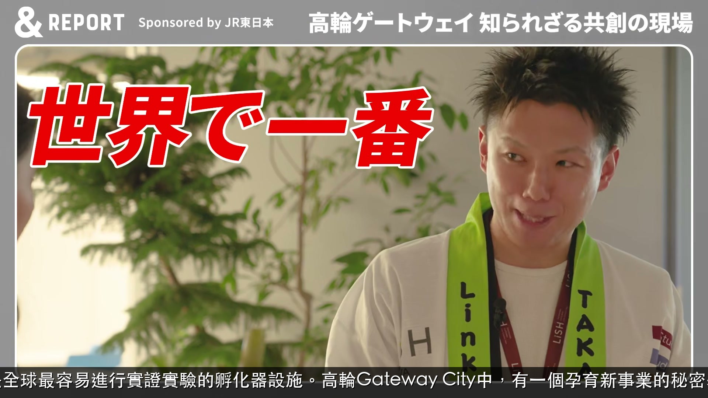
這裡是全球最容易進行實證實驗的孵化器設施。高輪Gateway City中，有一個孕育新事業的秘密基地。
⏱ 00:01 · YouTube ↗
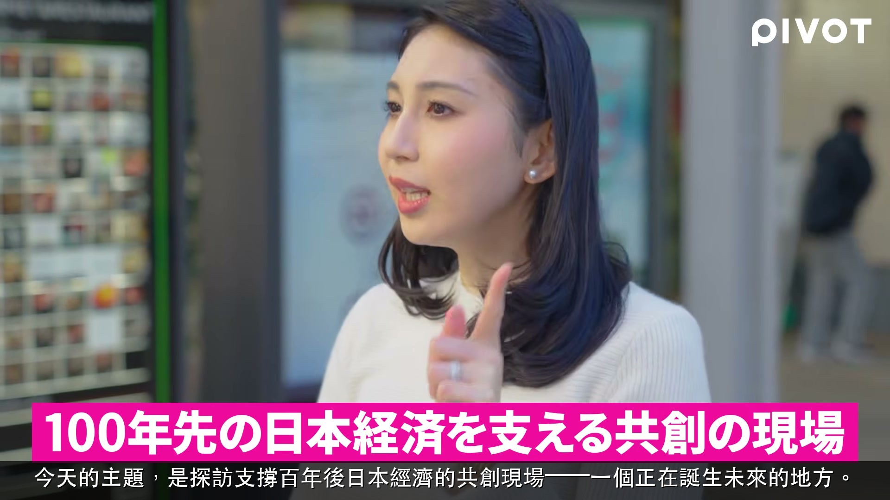
今天的主題，是探訪支撐百年後日本經濟的共創現場——一個正在誕生未來的地方。
⏱ 01:45 · YouTube ↗
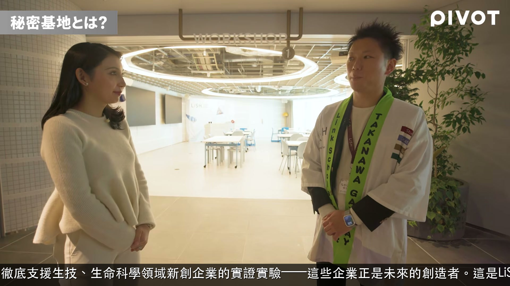
第三個特色，是徹底支援生技、生命科學領域新創企業的實證實驗——這些企業正是未來的創造者。這是LiSH最大的特徵。
⏱ 05:58 · YouTube ↗
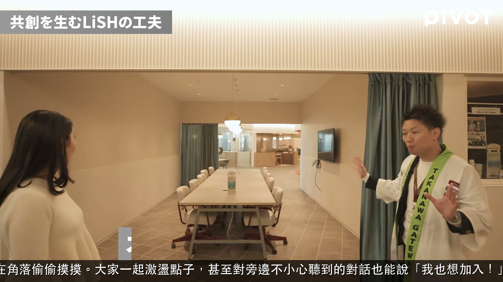
因為是開放式創新，所以不能躲在角落偷偷摸摸。大家一起激盪點子，甚至對旁邊不小心聽到的對話也能說「我也想加入！」——就是要設計出這樣的環境。
⏱ 08:46 · YouTube ↗
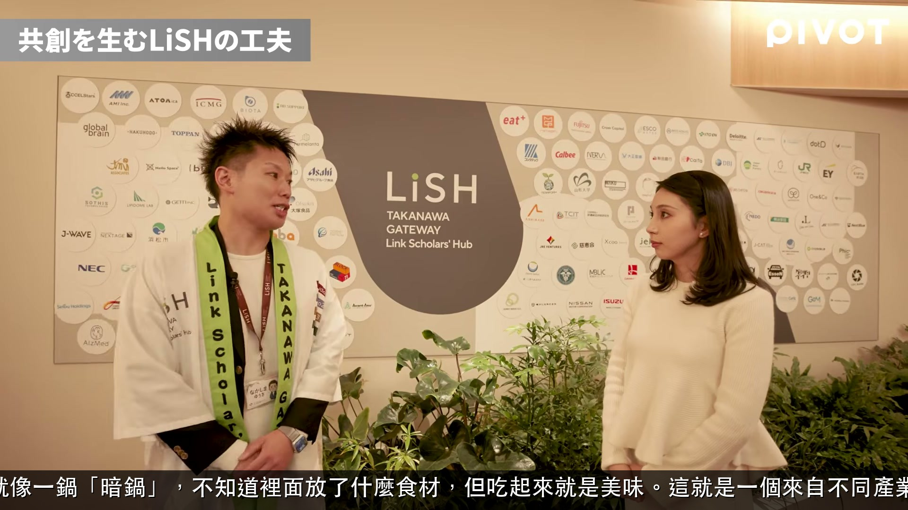
我常用的比喻是：LiSH就像一鍋「暗鍋」，不知道裡面放了什麼食材，但吃起來就是美味。這就是一個來自不同產業的人相互交融的地方。
⏱ 10:53 · YouTube ↗
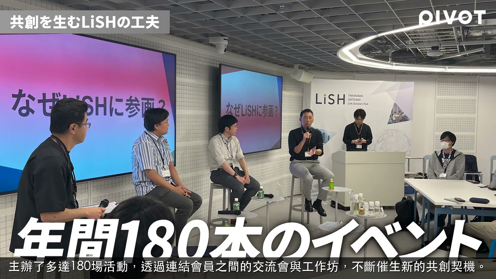
主辦了多達180場活動，透過連結會員之間的交流會與工作坊，不斷催生新的共創契機。
⏱ 12:07 · YouTube ↗
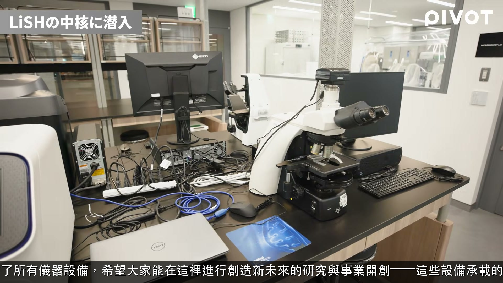
由JR這一方備齊了所有儀器設備，希望大家能在這裡進行創造新未來的研究與事業開創——這些設備承載的正是這份心意。
⏱ 14:55 · YouTube ↗
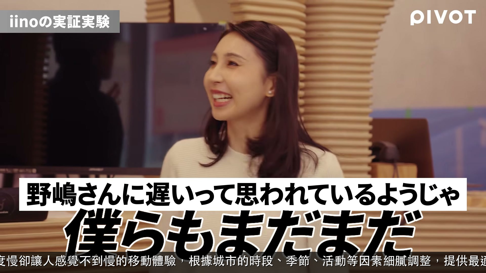
我們追求的是一種速度慢卻讓人感覺不到慢的移動體驗，根據城市的時段、季節、活動等因素細膩調整，提供最適合當下的移動服務。
⏱ 20:41 · YouTube ↗
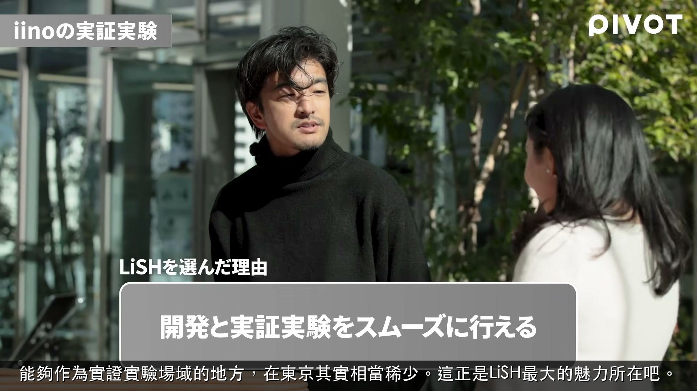
能夠作為實證實驗場域的地方，在東京其實相當稀少。這正是LiSH最大的魅力所在吧。
⏱ 28:13 · YouTube ↗
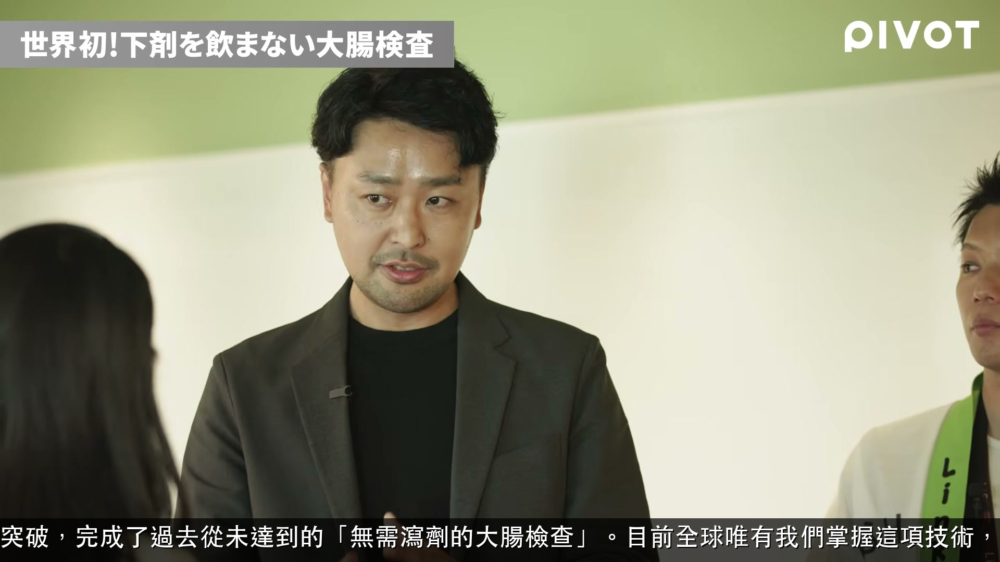
從數據與AI技術兩個面向實現了突破，完成了過去從未達到的「無需瀉劑的大腸檢查」。目前全球唯有我們掌握這項技術，這正是我們競爭力的核心所在。
⏱ 30:57 · YouTube ↗
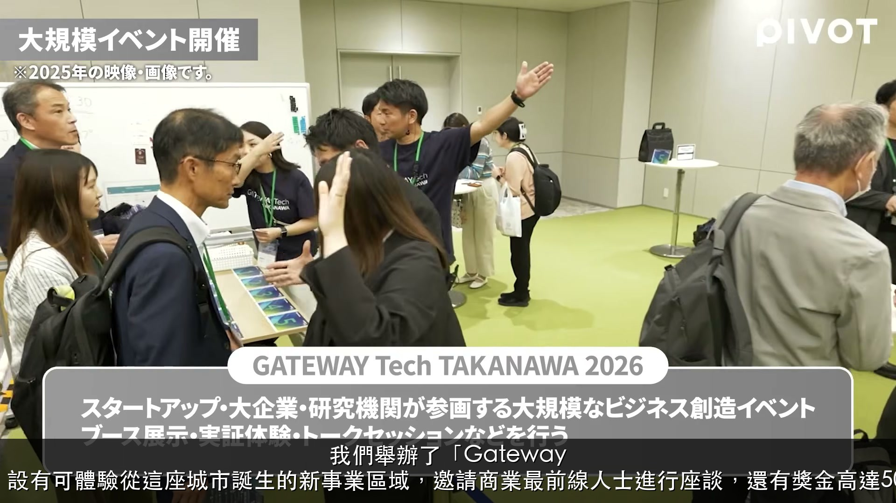
我們舉辦了「Gateway Tech高輪」商業活動，設有可體驗從這座城市誕生的新事業區域，邀請商業最前線人士進行座談，還有獎金高達500萬日圓的創業競賽。
⏱ 37:37 · YouTube ↗
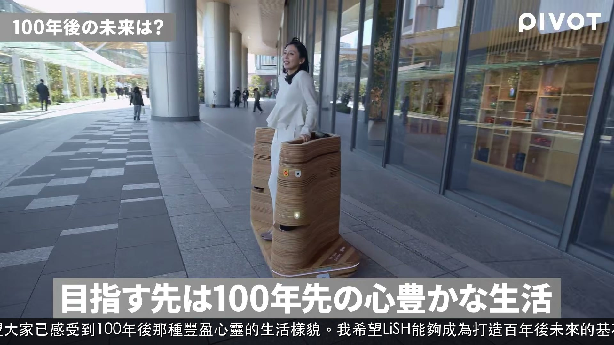
希望大家已感受到100年後那種豐盈心靈的生活樣貌。我希望LiSH能夠成為打造百年後未來的基石。
⏱ 39:33 · YouTube ↗